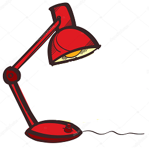

Uno de los muchos métodos Javascript HTML es getElementById().
En este ejemplo se utiliza el método de "encontrar" un elemento HTML(con id="demo) y cambia el contenido del elemento (innerHTML) a "Hola Javascript":
Ejemplos de uso
JS puede cambiar el contenido HTML
JS can change the HTML content
JS peut changer le contenu HTML
En este caso, JavaScript cambia el valor del atributo src (fuente) de una imagen.
JS puede cambiar el estilo en este caso el color del texto
JS puede cambiar el estilo en este caso el tamaño del texto
Ana María Medina Barroso
Marzo 2019